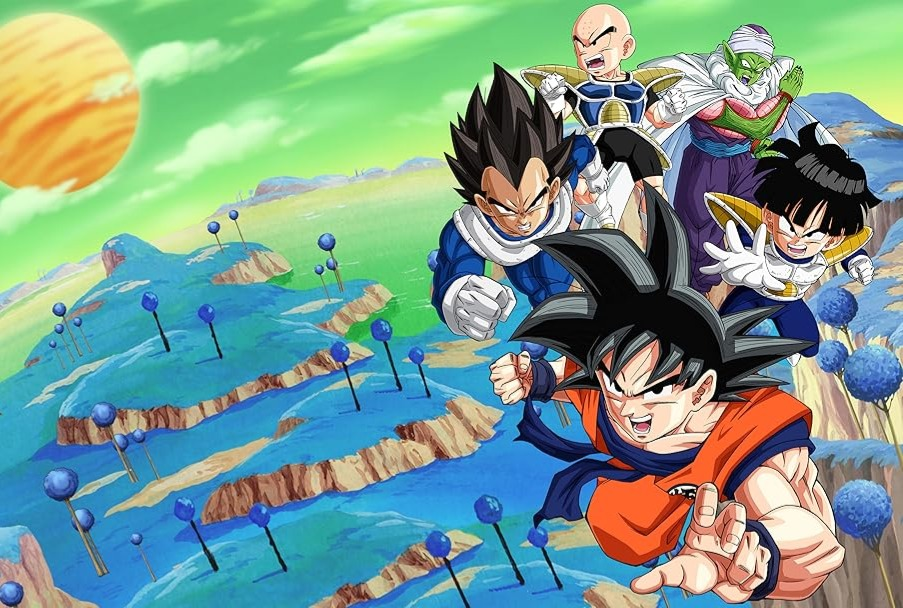

What is Dragon Ball Z?
Dragon Ball Z is a Japanese anime series and a direct continuation of the original Dragon Ball series, created by Akira Toriyama. It originally aired from 1989 to 1996.
The story follows Goku, a warrior of alien origin (from the Saiyan race), who defends Earth from powerful enemies. Throughout the series, Goku trains to become stronger and faces increasingly dangerous villains.
Dragon Ball Z is one of the most influential and popular anime series in the world, with millions of fans, movies, video games, toys, and follow-up series like Dragon Ball Super.
Dragon Ball Z continues the adventures of Son Goku in his adult life as he and his companions defend the Earth against villains including aliens (Vegeta, Frieza), androids (Cell), and magical creatures (Majin Buu). At the same time, the story follows the life of Goku's son, Gohan, as well as the development of his rivals, Piccolo and Vegeta.
Due to the success of the series in the United States, the manga chapters making up its story were initially released by Viz Media under the Dragon Ball Z title. The anime's popularity has also spawned various media and merchandise that has come to represent the majority of the material within the Dragon Ball franchise, including films, home video releases, soundtracks, trading cards, and video games. Dragon Ball Z remains a cultural icon through numerous adaptations and re-releases, including a remastered broadcast titled Dragon Ball Z Kai.
Origins of the Idea
Inspiration from "Journey to the West":
The original Dragon Ball manga (1984) was loosely inspired by the classic 16th-century Chinese novel "Journey to the West". Goku was based on Sun Wukong, the Monkey King, and early adventures had a mythological and comedic tone.
Transition to More Action:
As the manga progressed, Toriyama shifted from comedy and fantasy toward martial arts and action-packed battles. This change in tone laid the foundation for what would become Dragon Ball Z.
Publisher and Audience Influence:
The manga was published in Weekly Shōnen Jump, a magazine for young boys, whose readers were growing up and wanted more mature and intense content. Toriyama adapted to this by creating deeper story arcs and stronger villains.
Separation into “Dragon Ball Z”:
When the manga was adapted into anime, the producers at Toei Animation decided to split the series:
- The earlier, lighter part became Dragon Ball.
- The later, more intense and action-driven part became Dragon Ball Z, starting with Goku’s brother Raditz arriving on Earth.